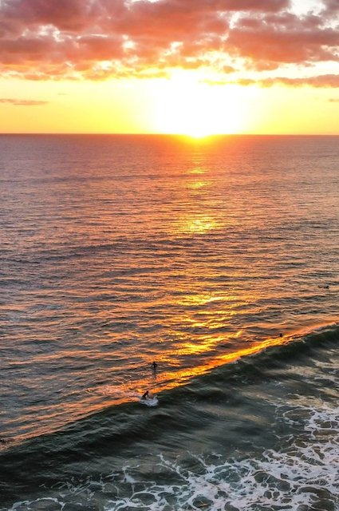

L'essenzialità è una scelta di campo.
Il mio modo di guardare le cose si è formato lontano dai monitor, tra le distese di roccia e vento di Fuerteventura. In quell'isola ho capito che la bellezza e l'efficacia non nascono dall'aggiungere, ma dal togliere. Quando c'è troppo rumore, la voce si perde.
Questo viaggio continuo tra paesaggi essenziali e geografie diverse ha cambiato radicalmente il mio approccio al lavoro: che io stia curando la comunicazione di un grande evento o riordinando la logistica di un progetto, il mio primo istinto è sempre quello di eliminare il superfluo per far emergere il nucleo, la verità di una storia.
Dalla platea al dietro le quinte.
Sono cresciuta frequentando i teatri e i festival. Seduta in platea, ho imparato presto a non subire passivamente quello che accadeva sul palco, ma a studiarne i meccanismi, i tempi, l'impatto sul pubblico. Quel ruolo di osservatrice distante è diventato la mia postura professionale. Il mio posto non è sotto i riflettori, ma al fianco di chi crea, traducendo la complessità di un'idea in una struttura solida, comprensibile e comunicabile.
La precisione della parola.
Per me la scrittura è una questione di metrica e di ritmo. Ogni testo, che sia un saggio critico o una micro-narrazione digitale, ha un suo peso specifico. Non credo nella comunicazione compulsiva dettata dai flussi degli algoritmi; credo in una comunicazione lenta, che rispetti il tempo e l'intelligenza di chi legge.
Il mio percorso inizia con una solida base universitaria incentrata sul marketing culturale e sulle discipline dello spettacolo. Le prime esperienze sul campo avvengono all'interno di uffici organizzativi di festival di rilevanza nazionale: lì, affiancando la produzione dietro le quinte, apprendo da vicino le complesse dinamiche logistiche e di gestione che tengono in piedi un grande evento.
Successivamente, il mio raggio d'azione si amplia unendo l'organizzazione alla cura strategica dell'immagine. Mi specializzo con un percorso avanzato in digital marketing e inizio a coordinare i primi progetti di residenza artistica e audience engagement. Questo periodo è fondamentale per mettere a fuoco un metodo preciso: far dialogare la visione creativa degli artisti con le necessità operative e con il territorio che li ospita.
Il consolidamento professionale si traduce nella progettazione e direzione organizzativa di formati festivalieri cross-disciplinari. Sperimento la curatela e lo scouting in contesti che intrecciano linguaggi differenti all'interno di spazi urbani e non convenzionali. Questa fase sul campo affina le mie competenze nella gestione di budget complessi, nel coordinamento di team di produzione e nello sviluppo di strategie per il coinvolgimento di nuove fasce di pubblico.
Oggi la mia attività si muove su un doppio binario, tra la consulenza strategica per grandi festival internazionali e lo sviluppo organizzativo e promozionale di compagnie di teatro d'autore. Gestisco le relazioni istituzionali e la fattibilità tecnica di progetti site-specific, dedicando particolare attenzione alla valorizzazione e al posizionamento digitale di nuove produzioni e giovani realtà europee.
Ti riconosci in qualcosa di tutto questo?
Scrivimi →Social media e narrazione del festival.
Affiancamento organizzativo, curatoriale e gestione dell'immagine artistica.
Organizzatrice e curatrice del festival Diversimili.
Ti va di parlarne?